Теми за държавен изпит
Начална страница
Връщане към КМИТ
Тема №1 - Математически основи на компютърните системи
Тема №2 - Логически основи на компютърните системи
Тема №3 - Архитектура на компютърните системи
Тема №4 - Информационни системи и технологии
Тема №5 - Създаване и приложение на текстови документи
Тема №6 - Обработка и анализ на данни чрез електронни таблици
Тема №7 - Езици за програмиране таблици
Тема №8 - ИКТ в обучението и работа в дигитална среда
Тема №9 - Електронно обучение
Тема №10 - Жизнен цикъл на уеб сайт
Тема №11 - Дидактически фактори на обучението по ИИТ
Тема №12 - Оценяване на резултатите от обучението по ИИТ
